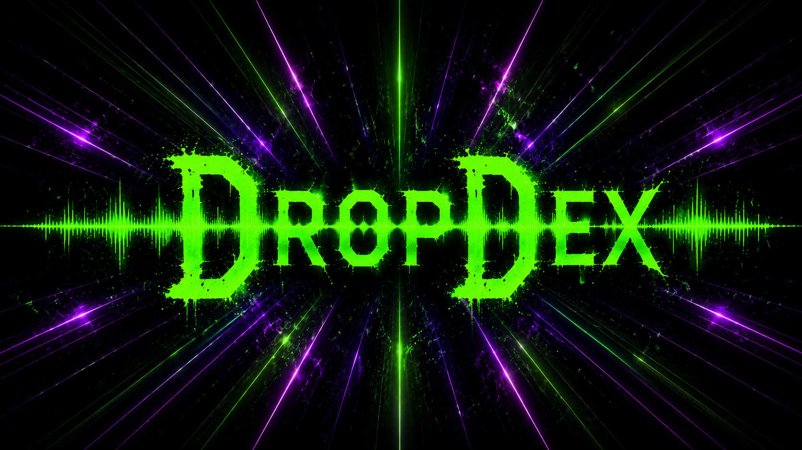

Weight
Low-end mass and bass impact.
Shock
Immediate impact at drop entry.
Aggression
Force, attack, and intensity.
Tension
Build-up pressure before release.
Brightness
High-frequency presence and sharpness.
Power
Composite score across the model.

A plain-language guide to the measurements behind each DropDex card.
Low-end mass and bass impact.
Immediate impact at drop entry.
Force, attack, and intensity.
Build-up pressure before release.
High-frequency presence and sharpness.
Composite score across the model.